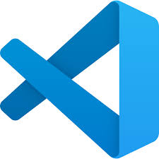
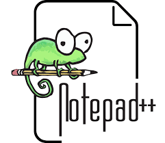
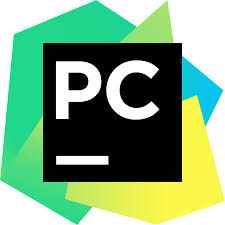

How do you write code?
Writing code is a fundamental skill in today's digital world. It involves creating instructions for computers to perform specific tasks. To write code, you can follow these steps:
- Choose a programming language: There are many programming languages to choose from, such as Python, JavaScript, Java, C++, etc.
- Set up your development environment: Install the necessary tools and software to write and run your code.
- Write your code: Use the syntax and features of your chosen programming language to create your program.
- Test your code: Run your code to see if it works as expected and debug any errors you find.
Recommendations
Here are some recommendations for learning to code:
- Start with a beginner-friendly programming language like Python or JavaScript.
- Use online resources and tutorials to learn the basics of programming.
- Practice regularly to improve your skills.
- Join online programming communities to help and get help from other professional developers.
- Work on projects to apply what you've learned.
- Consider taking part in coding bootcamps by online communities, or colleges or universities.
- Don't be afraid to ask for help when you get stuck. Programming can be challenging, but there are many resources available to assist you.
Remember, learning to code takes time and constant practice for months or years depending on how much you have learned already.
following these tips must have made you as happy as this cute dog!
What software should you use?
There are many options available for writing code, you can even use notepad that comes preinstalled with windows to write code.
Here are some recommendations in order:
| Software | Description | |
|---|---|---|
| VS Code | One of the best multi-language code editor, with support for extentions made by Micrisoft themselves or a solo developer or a 3rd-party company or studio. It can be used to make game developing and software developting easier. |  |
| NotePad++ | A free and lightweight text editor that supports syntax highlighting for many programming languages and is very beginner friendly and easy to use. |  |
| Atom | A free and open-source text editor that is highly customizable and has a large community of users and developers. | |
| Intellij IDEA | A powerfull IDE for Java development and development of other programs that use Java like making mods for Minecraft Java Edition! |  |
| PyCharm | A popular IDE for Python development that offers a wide range of features and tools to help you write and debug your code. |  |
| Eclipse | A widely used IDE for Java development. |